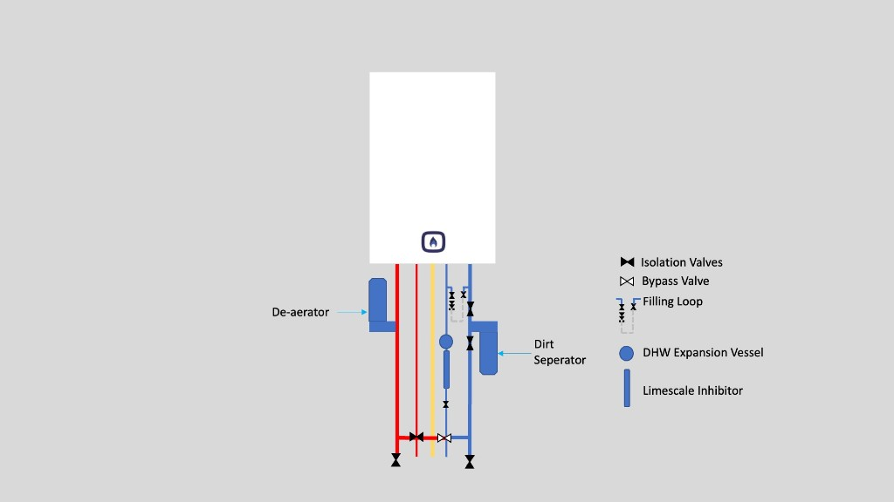

Having carried out many installations we have determined that the installation shown in the above picture will produce a highly maintainable system and one which minimises corrosion. There are a few key aspects of this method of installation that have very high benefits for the homeowner. There are some variations required dependent on your particular boiler model that are not shown here.
Key components in the diagram
Each part of this layout serves a specific purpose. Together they protect the boiler, make servicing straightforward, and help the system run efficiently for years.
De-aerator (heating flow)
Installed on the flow pipe leaving the boiler, a de-aerator continuously removes dissolved air and microbubbles from the heating water. Air in the system causes corrosion, noise, and poor circulation. On a new or properly flushed system, positioning the de-aerator on the flow side — where water is hottest — gives the best air-removal performance.
Dirt separator (heating return)
Fitted on the return pipe before water re-enters the boiler, a dirt separator captures sludge, magnetite, and debris that accumulates in radiators and pipework. Combi boilers have narrow waterways in their heat exchangers, making them particularly vulnerable to contamination. Keeping the separator on the return line protects the most sensitive components.
Isolation valves
Every major connection should have isolation valves (shown as black bow-tie symbols in the diagram). These allow individual components — the boiler, filter, expansion vessel, or filling loop — to be serviced or replaced without draining the entire system. Skipping isolation valves is a false economy: it discourages routine maintenance.
System bypass valve
Most modern combi boilers incorporate an internal automatic bypass (or use a modulating pump to maintain minimum flow). However, Building Regulations and many manufacturers still require an external automatic bypass between flow and return — particularly where thermostatic radiator valves (TRVs) can shut off all radiator flow. On boilers with no internal bypass, an external bypass is essential, not optional. Always check your boiler's installation manual.
The bypass maintains a minimum circulation path when TRVs close down. This prevents the boiler from cycling on its overheat stat, supports pump overrun at shutdown, and reduces stress on the pump. The bypass should be set according to the manufacturer's instructions — typically only open enough to allow minimum flow, not fully open.
Filling loop
The dashed filling loop connects the cold mains inlet to the heating return, allowing the system to be pressurised with fresh water. It must incorporate double check valves or equivalent backflow protection and should be disconnected or isolated when not in use, as a permanently connected filling loop is a common source of slow over-pressurisation.
Before filling, the system should be confirmed leak-free by air pressure testing followed by water pressure testing to the pressure specified in the installation instructions or BS EN 14336 (typically around 3 bar held for 30 minutes). Only fill a system that has passed both tests — introducing water into a leaking installation makes fault-finding harder and allows repeated makeup water to introduce fresh oxygen, accelerating corrosion.
The German VDI 2035 standard — widely referenced by European boiler manufacturers — sets detailed requirements for heating system filling and water quality. It specifies conditioned fill water with controlled hardness, electrical conductivity, and pH, together with proper de-aeration and a correctly commissioned pressure-maintenance system. The principle is that as long as the system has no leaks, is properly air and water pressure tested, and is filled with water meeting VDI 2035 guide values, oxygen corrosion can be prevented through physical water conditioning and system sealing rather than chemical inhibitors alone. In the UK, BS 7593 with inhibitor dosing remains the conventional approach and is what most manufacturers' warranties require — but VDI 2035 represents a higher standard of filling practice that complements the layout shown in the diagram.
Limescale inhibitor (cold water inlet)
On the mains cold supply to the boiler, a limescale inhibitor reduces scale build-up in the plate heat exchanger — the component that heats tap water. In hard-water areas this is especially important; scale restricts flow, reduces hot-water performance, and can eventually block the exchanger entirely. A water softener is the most effective option where hardness is severe.
DHW expansion vessel
The small expansion vessel on the domestic hot water circuit absorbs pressure fluctuations caused by rapid heating and cooling of water in the plate heat exchanger and pipework. Without it, repeated thermal shock can stress joints and components. Some boilers have an internal vessel; where the manufacturer's instructions require an external one, it must be sized and pre-charged correctly.
System preparation before installation
Installing a new combi onto a dirty system is the single most common cause of premature heat exchanger failure. Before connecting the boiler:
- Flush the system — A chemical clean or power flush removes existing sludge, rust, and flux residues from old pipework. This is required under BS 7593 and Building Regulations Part L for replacement boiler installations.
- Dose with corrosion inhibitor — After flushing, fill with clean water and add a quality inhibitor (e.g. Fernox F1, Sentinel X100, or ADEY MC1+). The inhibitor and dirt separator work together: the filter catches debris, the inhibitor prevents new corrosion.
- Test inhibitor concentration — Use a test kit at commissioning and check again at each annual service. Re-dose if levels have dropped below the manufacturer's minimum.
- Consider a magnetic filter — Many installations combine a dirt separator with a magnetic filter (e.g. Fernox TF1, Adey MagnaClean) on the return pipe for additional magnetite capture. See our choosing guide for product recommendations.
Correct sizing and commissioning
- Heat-loss calculation — Under Building Regulations Part L, a room-by-room heat-loss calculation is required before any boiler replacement. Oversizing causes excessive cycling and reduced condensing efficiency; undersizing leaves the home cold or short of hot water. See our sizing guide.
- Gas Safe registration — All gas work must be carried out by a Gas Safe registered engineer. Check the engineer's ID card and that their qualifications cover the work being done.
- Building Regulations notification — The installation must be notified to Building Control (directly or via a Competent Person Scheme). You should receive a certificate confirming compliance.
- Benchmark commissioning — The installer must complete the manufacturer's Benchmark checklist, recording flush details, inhibitor used, gas pressures, combustion readings, and control settings. This document is required to validate the warranty.
- Boiler Plus compliance — New combi installations in England must include time and temperature controls plus at least one additional energy-saving measure (weather compensation, load compensation, smart controls with automation, or flue gas heat recovery).
Condensate, flue, and gas supply
- Condensate disposal — Route condensate to an internal waste pipe where possible. External runs need minimum 32 mm pipe, continuous fall at 2.5%, and 13 mm closed-cell insulation to reduce freezing risk in cold weather.
- Flue terminal positioning — The flue terminal must meet minimum distance requirements from windows, doors, air bricks, and boundaries as specified in the manufacturer's instructions and Building Regulations.
- Gas pipe sizing — Confirm the gas meter and supply pipe can deliver the boiler's maximum input. Undersized gas pipework causes incomplete combustion and poor performance.
Running settings for longevity
- Lower flow temperature — Setting the heating flow temperature to around 60 °C (rather than 70–80 °C) keeps the boiler in condensing mode more often, reducing gas consumption and thermal stress on components. See our flow temperature guide for a full walkthrough.
- Modulating controls — Room thermostats that modulate boiler output (especially OpenTherm-compatible controls) allow the boiler to run at the lowest output needed, improving efficiency and reducing wear from on/off cycling.
- TRVs on radiators — Thermostatic radiator valves in every heated room (except where a room stat is fitted) give room-by-room control and help the boiler modulate.
Ongoing maintenance
A well-installed system still needs regular care to stay efficient and reliable:
- Annual service — Have the boiler serviced every year by a Gas Safe engineer. This maintains safety, efficiency, and the manufacturer's warranty.
- Clean the dirt separator and magnetic filter — These should be emptied or cleaned at each annual service.
- Check system pressure — Combi systems typically operate at 1.0–1.5 bar when cold. Repeated pressure loss may indicate a leak that should be investigated promptly.
- Monitor hot-water performance — Reduced flow or temperature at taps can indicate a scaled plate heat exchanger or a failing diverter valve — both are easier to fix early.
- Re-dose inhibitor — Test system water annually and re-dose inhibitor every 3–5 years as a minimum, or sooner if levels drop.
Model-specific variations
The diagram shows a generic best-practice layout. Individual boiler manufacturers may require specific arrangements for hydraulic separation, internal bypass, condensate routing, or external expansion vessels. Always follow the installation instructions for your exact boiler model — available free at BoilerManuals.com.
See also our guides on choosing a combi boiler and sizing & efficiency, or the annual service checklist at BoilerService.com.
Installation guidance informed by UK Building Regulations Part L, BS 7593 water-treatment standards, and industry best practice. Always use a Gas Safe registered engineer for installation and servicing.